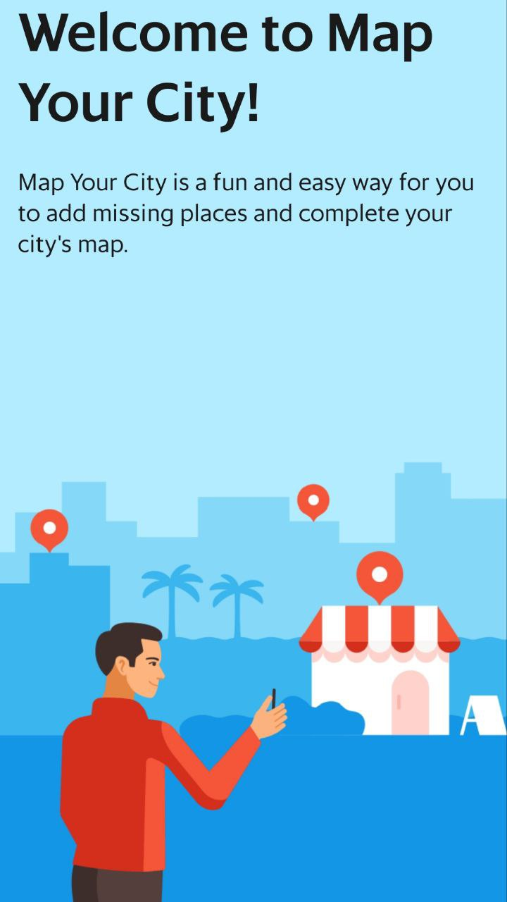
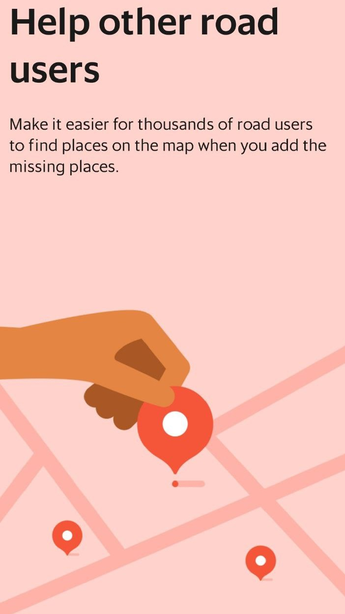
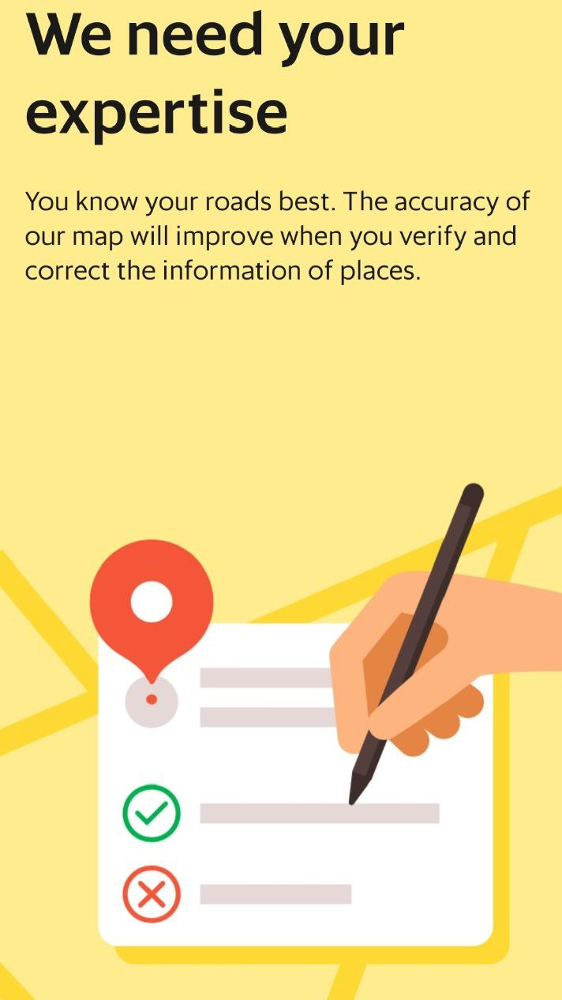
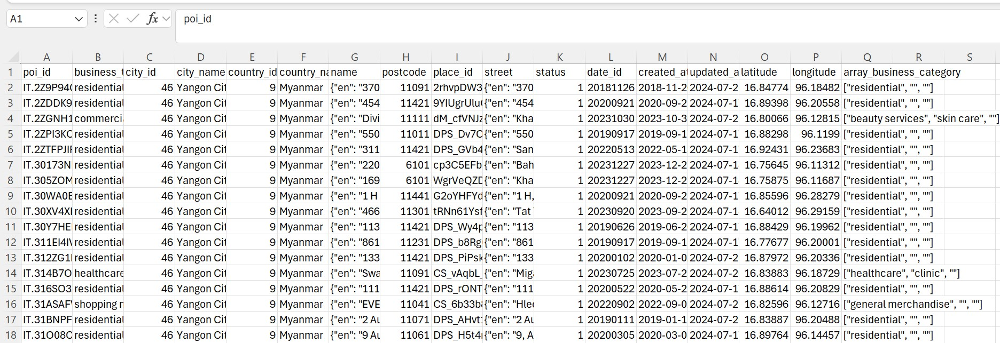

Map Your City(MYC) Campaign
Project Description
The "Map Your City" (MYC) campaign empowers our community of drivers and bikers to shape the future of our map data in key cities across Myanmar, including Yangon, Mandalay, Naypyidaw, Pathein, and Mawlamyine. By using the Grab app, participants can easily add new points of interest, update existing information, and verify the accuracy of map data. We value these contributions and offer bi-monthly monetary incentives, conveniently paid out to participants' Driver Cash Wallets. A leaderboard adds an element of friendly competition, while a step-by-step submission process ensures a seamless experience. The result is a continually improving map that benefits both drivers and passengers, making their journeys smoother and more efficient.
Objectives
The Map Your City (MYC) campaign has the following key objectives:
- Streamlined Campaign Operations: Implement a timely and accurate process for creating and updating POI crowdsourcing campaigns, aligned with local requirements and facilitated by proactive campaign management tools.
- Increased User Engagement: Drive user contributions to map data by offering attractive incentives for adding and updating places (e.g., 400 MMK with photo, 200 MMK without).
- Motivated Community Participation: Recognize and reward top contributors through special prizes and additional incentives.
- Enhanced Map Data Quality: Significantly improve the accuracy and completeness of map data to benefit all Grab platform users.
- Dynamic Data Enrichment: Facilitate dynamic data collection and verification tasks, rewarding users for their contributions to map data quality.



Sample Data of POI in Yangon City (total: 427397)
